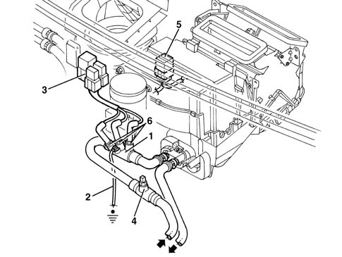

5020L additional heater
- Path
- Descriptions > 50 AUXILIARY UNITS > 5020 HEATER > 5020L additional heater
- Kind
- system description
- Applies to
- engines: 1.9 JTD 8v ; all production periods
- Interactive page
- https://sloeber94.github.io/elrnDB-a156/en/#/3232957
Applies to: engines: 1.9 JTD 8v ; all production periods
When the engine is cold, the heater unit cannnot heat the interior properly. This is particularly true of Diesel engines, which heat up more slowly.
These engines may optionally be fitted with a supplementary heater system. This remains active from the moment when the engine is turned on until a certain temperature is reached.
The system takes the form of an additional heater device, located on the heater unit motor coolant delivery line.
This device contains three heater plugs (similar to those used to preheat the combustion chamber).
OPERATION STRATEGY
Heater plug operation is controlled by a special electronic control unit. This controls one, two or three plugs to provide a heating power of 200W, 400W or 600W.
This control logic depends on:
- engine coolant outlet temperature;
- available electrical power level;
- of engine rpm
Coolant outlet temperature is provided by a temperature sensor located on the line carrying coolant to the heater, immediately upstream of the additional heater device. The control system deactivates the heater plugs when engine coolant outlet temperature exceeds 70° C.
The control unit also considers air temperature in the engine bay. This is not recorded by a sensor, but assumed to be the same as coolant temperature upon start-up: deactivation temperature drops from 70° C to 65° C if the assumed air temperature is higher.
The second parameter - available electrical power level - is obtained from battery voltage: if the voltage exceeds 12.8 V, heater plug operation is enabled. One, two or all three heater plugs are activated below this temperature.
This parameter is re-read every 10 seconds to monitor power uptake so that the battery does not go flat.
Engine rpm information is used to prevent the heater plugs operating with the engine off: the enablement level is 660 rpm. for the 4 cylinder engine, it is 530 rpm. for the 5 cylinder engine.
The supply of one, two or three heater plugs is controlled by two relays:
- 1. level: activated by the first relay;
- 2. level: activated by the second relay;
- 3. level: activated by both relays.
A third relay/safety switch cuts off the power supply to the heater plugs if they are not effectively earthed. The metal device containing the spark plugs is connected to the engine earth by a braid. If this connection is cut, the relay cuts off the power supply to the heater plugs.
COMPONENT LOCATION
-

1, Additional heater device 2, Earth braid for additional heater 3, Additional heater relays 4, Temperature sensor for additional heater 5, Additional heater control unit 6, Additional heater coils (plugs)
The additional heater device containing the three heater plugs is located on the pipe carrying coolant to the heater unit. It is secured to the engine bulkhead by a bracket.
The coolant temperature sensor is fitted to the same pipe immediately upstream, i.e. in the direction of the engine thermostat.
The three relays are located near the diesel filter on a special bracket fastened to the engine bulkhead.
The system control unit is located beneath the facia, on the conveyer/distributor unit in both air conditioned and heated versions (next to the existing relay in this case).